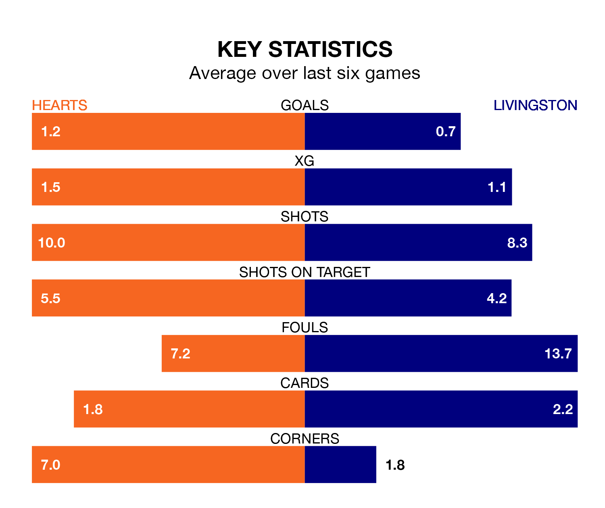

Relegation candidates Livingston face a challenge away against high-flying Hearts at Tynecastle Park on Saturday.
Livingston are rooted to the bottom of the Premiership table, and have picked up just three wins and nine draws in their 32 games to date.
Hearts, meanwhile, are third in the standings with 59 points, having won 18 and drawn five, and are 16 points behind table-toppers Celtic.
In Lawrence Shankland, Hearts have the league's sharpest shooter so far this season. He has notched 20 goals in 31 appearances.
His goal rate of one every 139 minutes is much quicker than that of Bruce Anderson, Livingston's top scorer with a goal every 309 minutes, and a total of five goals in 29 games.
The hosts are in mixed form in the Premiership, with two wins and two draws from their last six games.
With no wins and two draws over that period, the away side's form is much worse – they have taken two points from 18, compared to Hearts's eight.
In the last 10 years, Hearts and Livingston have played each other on 19 occasions. Hearts won nine of them, Livingston three, and they drew seven times.
On average, Hearts scored 1.2 goals and Livingston 0.8 in those matches.
Their last meeting was on January 2, when Hearts won 2-1 away.
With 20 goals in 32 games so far this season, Livingston are the league's lowest scorers with 0.6 goals per game. And they are conceding more than average, letting in 55 goals at a rate of 1.7 per game.
Hearts, meanwhile, are average scorers, with 1.3 goals per game. They have conceded 1.0 goal per game.
Hearts's last match was on April 6, a 2-1 win against St. Mirren, with Jorge Grant and Mikael Mandron (own goal) getting the goals for Hearts.
Livingston drew 0-0 with Aberdeen last time out, also on April 6.
Saturday's match will be refereed by Colin Steven, who has taken charge of seven Premiership games so far this season, issuing one red card and booking 35 players. He has awarded two penalties.
He is yet to oversee a match featuring either Hearts or Livingston this season.
Updated: 10:01 (UTC), 12/04/24